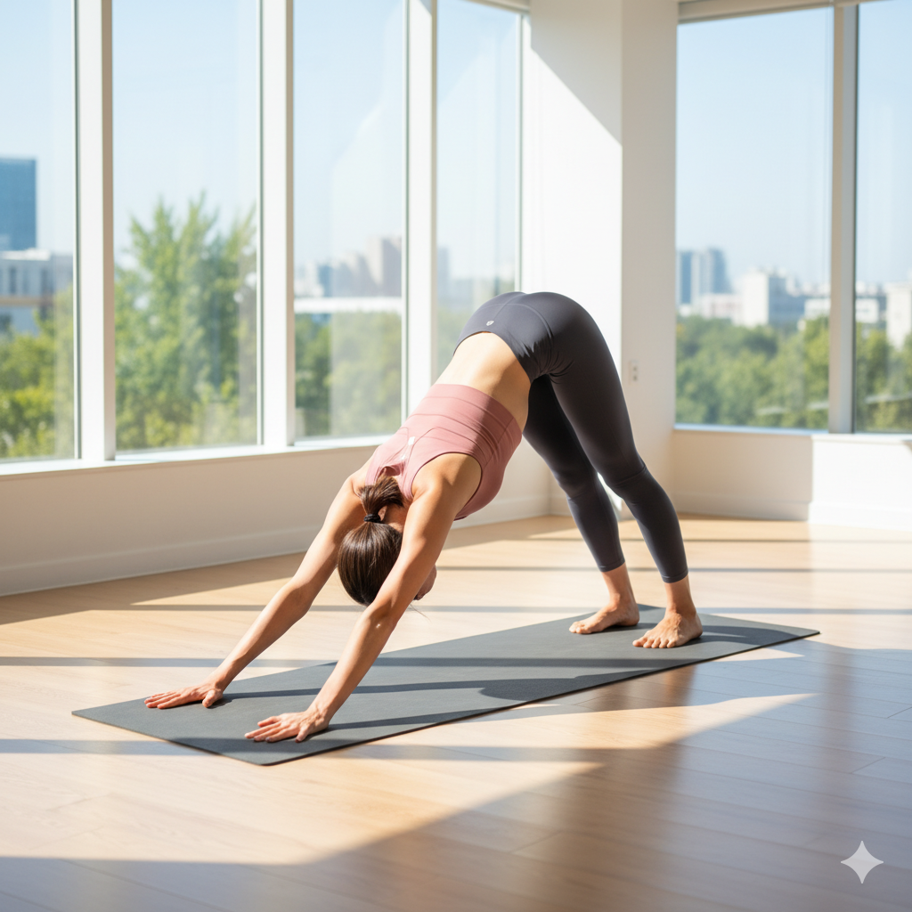
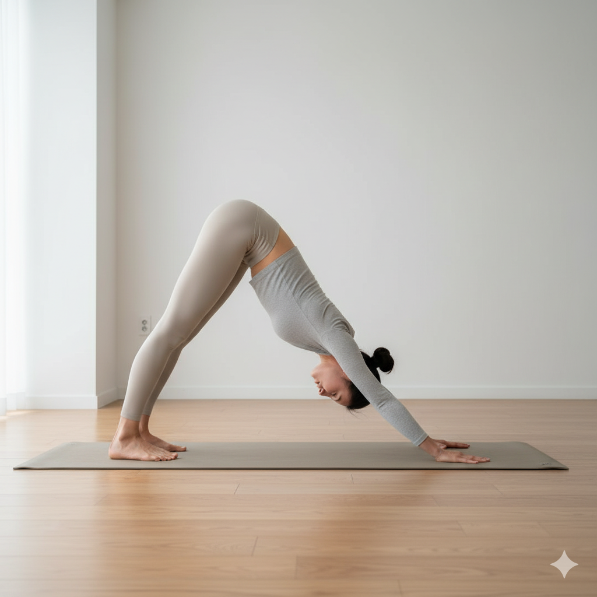
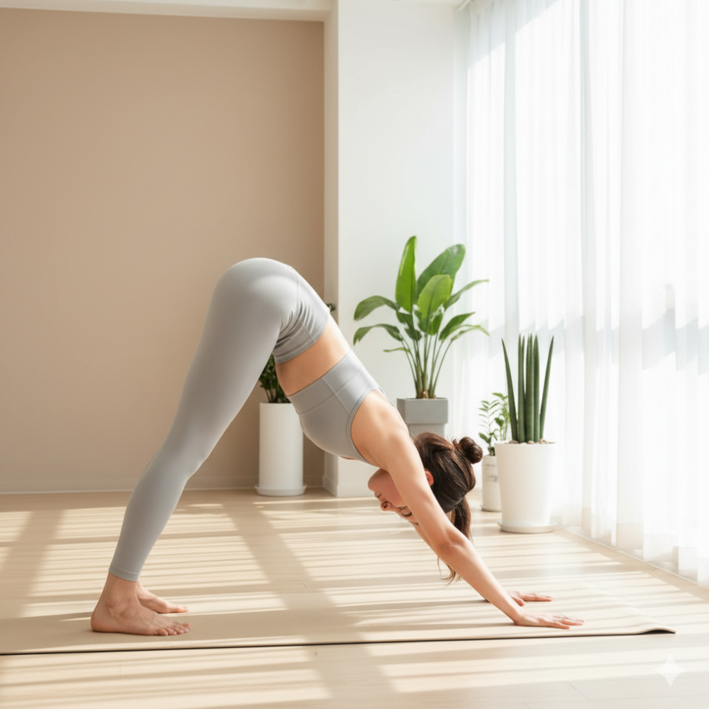
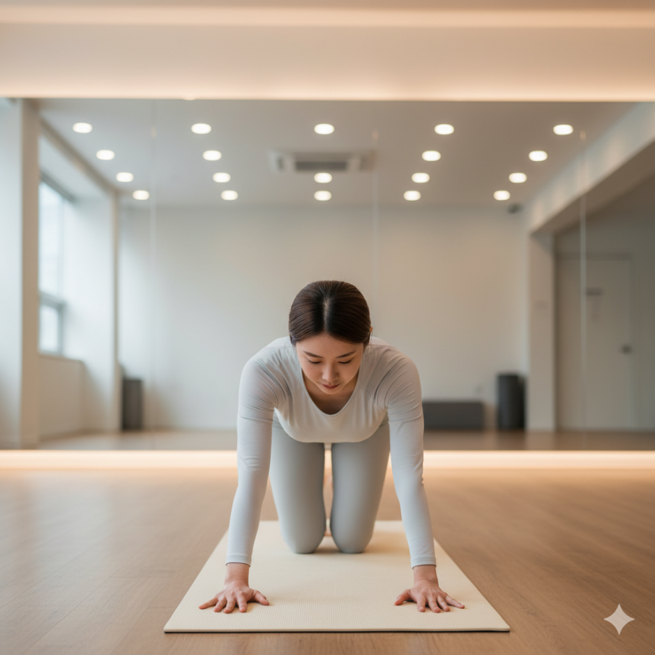
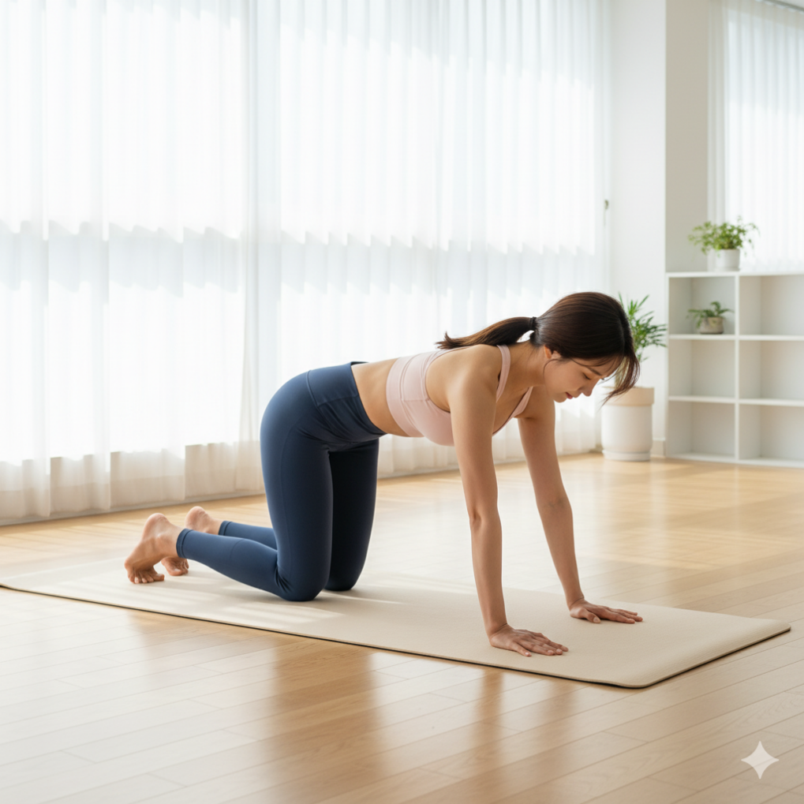
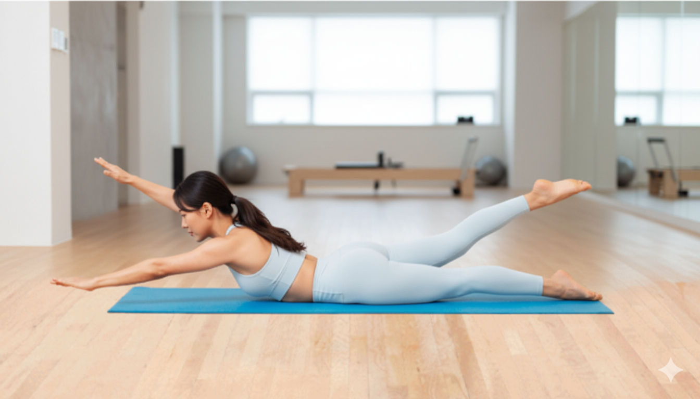
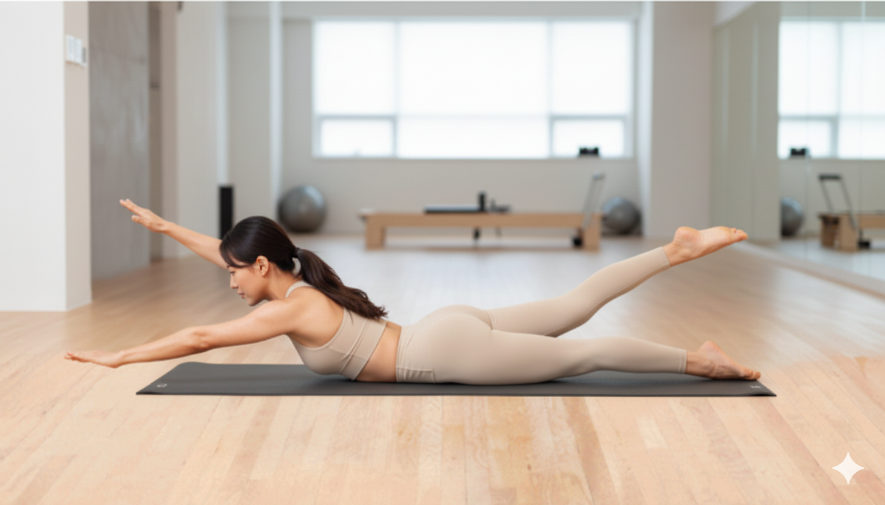

📝 프롬프트 작성 순서
운동 동작에 정확한 정보 검색을 위해 다음 AI 도구의 웹 검색 기능을 활용하여 원하는 운동 동작 보고서를 작성합니다.
보고서 작성 후 원하는 이미지를 얻기 위해 이미지 가이드 프롬프트에 맞춰서 생성형 AI에 넣어 더 나은 프롬프트를 얻습니다.
🎯 운동 동작 이미지를 생성하는 방법
📄 방법 1: 보고서 → 이미지
보고서 작성 후 이미지 생성 프롬프트를 얻어 이미지 생성
📝 방법 2: 블로그 글 → 이미지
보고서 작성 후 블로그 글을 작성하여 블로그 글에 알맞은 이미지 생성 프롬프트를 얻어 이미지 생성
📸 방법 3: 실제 사진 → 수정
실제 사진을 넣어 원하는 방향으로 직접 이미지를 수정하여 생성 (복잡한 운동 동작에 적합)
⚠️ 프롬프트 작성 전 유의사항
- 영어 작성 필수: 나노바나나에 프롬프트를 입력할 때는 영어로 작성해야 합니다
- 번역 도구: 추가적인 요청이나 수정 부분 작성 시 DeepL로 번역하여 입력
구글 AI 스튜디오에 사진을 첨부할 때 두 번째 사진의 비율로 생성됩니다. 원하는 비율이 있을 경우 오른쪽 메뉴의 Aspect ratio를 원하는 비율로 설정하면 그 비율대로 이미지 생성이 가능합니다.
📋 보고서 요청 프롬프트
📌 보고서 요청 예시
📌 보고서 요청 고정 프롬프트 (템플릿)
🎨 이미지 생성 프롬프트 가이드
📌 이미지 생성 고정 프롬프트 가이드 (예시)
| 구분 | 내용 |
|---|---|
| 제안 | 다음은 운동동작에 사진을 생성하기 위한 프롬프트 가이드야. 프롬프트 가이드를 활용하여 만든 예시프롬프트도 아래에 제시했어. 가이드를 고려하여 더 나은 프롬프트를 한글과 영어로 제안해줘. |
| 프롬프트 형식 | 주체, 배경 및 환경, 매체 및 스타일, 세부 묘사 및 특수 효과, 구도 및 앵글, 조명, 색상 및 분위기 |
| 주체 | 위에 보고서 내용을 참고하여 운동동작을 한국인 여자가 하고 있는 |
| 배경 및 환경 | 한국의 필라테스 스튜디오에서 운동을 하고 있는 |
| 매체 및 스타일 | 사실적 이미지 |
| 세부 묘사 및 특수효과 | 1080P 화질, 16:9 화면 비율 |
| 구도 및 앵글 | 구도는 정면 |
| 조명 | 스튜디오의 밝은 조명과 채광이 들어오는 |
| 색상 및 분위기 | 밝은 분위기 |
📌 이미지 생성 고정 프롬프트 가이드 (템플릿)
| 구분 | 내용 |
|---|---|
| 주체 | 위에 보고서 내용을 참고하여 운동동작을 [ 운동동작을 하고 있는 대상에 대한 설명 ] |
| 배경 및 환경 | [ 원하는 배경, 실제 운동 스튜디오의 사진을 첨부하기 ] |
| 매체 및 스타일 | 사실적 이미지 |
| 세부 묘사 및 특수효과 | 1080P 화질, 16:9 화면 비율 |
| 구도 및 앵글 | [ 원하는 구도 ] |
| 조명 | [ 원하는 조명 ] |
| 색상 및 분위기 | [ 원하는 색상 및 분위기 ] |
🎯 프롬프트 결과 (AI별 비교)
🇰🇷 개선된 프롬프트 (한국어)
주체: 한국인 여성이 필라테스 매트 위에서 다운독(Downward Dog) 동작을 정확한 자세로 수행하고 있는 모습
배경 및 환경: 깔끔하고 현대적인 인테리어의 한국 필라테스 스튜디오 내부, 거울 벽과 식물 장식이 있는 공간
매체 및 스타일: 고해상도 사실적 사진 스타일
세부 묘사 및 특수 효과: 4K 화질, 16:9 화면 비율, 매트 질감과 인체 근육선이 자연스럽게 표현된 디테일
구도 및 앵글: 정면 앵글, 인체 전체가 화면에 들어오며 균형 잡힌 구도
조명: 부드럽고 자연광이 스튜디오 창문을 통해 들어오는 밝은 조명
색상 및 분위기: 따뜻하고 깨끗한 색감, 건강하고 평온한 분위기
🇺🇸 Improved Prompt (English)
Subject: A Korean woman performing the Downward Dog yoga pose with proper form on a Pilates mat
Background & Environment: Inside a modern Korean Pilates studio with mirrors, light wooden floors, and small indoor plants
Medium & Style: Highly realistic photo style
Detail & Effects: 4K resolution, 16:9 aspect ratio, fine details showing the mat texture and natural body muscle lines
Composition & Angle: Front view, full body visible in a balanced frame
Lighting: Soft natural lighting coming through studio windows, creating a bright atmosphere
Color & Mood: Warm and clean tones, evoking a healthy and calm mood
🇰🇷 한국어 프롬프트
주체: 한국인 여성이 요가 매트 위에서 견상자세(다운독, Adho Mukha Svanasana)를 정확한 자세(척추는 곧게, 엉덩이는 높이, 무릎은 살짝 구부린 수정 자세)로 시연하는 모습
배경 및 환경: 따뜻한 우드 바닥과 깨끗한 흰 벽이 있는 현대적이고 미니멀한 필라테스/요가 스튜디오 인테리어
매체 및 스타일: 하이 퀄리티 포토그래피, 잡지 화보 스타일 (Editorial Photography), 극사실주의
세부 묘사 및 특수 효과: 근육의 미세한 움직임과 척추의 신장(스트레칭)되는 느낌이 강조됨, 4K 해상도, 21:9 시네마틱 화면 비율
구도 및 앵글: 전신을 담는 풀샷, 척추의 길이를 강조하기 위한 로우 앵글 또는 미묘하게 올려다보는 각도
조명: 자연광이 은은하게 들어오는 부드러운 조명, 그림자가 깊지 않은 확산된 빛
색상 및 분위기: 차분하고 평온한 분위기, 뉴트럴 톤(베이지, 흰색, 연한 회색) 중심의 프로페셔널하고 세련된 색감
🇺🇸 English Prompt
Subject: A Korean woman performing the Downward-Facing Dog (Adho Mukha Svanasana) with perfect alignment (straight spine, hips lifted high, slightly bent knees showing modification) on a yoga mat.
Background & Environment: Modern, minimalist Pilates/Yoga studio interior with warm wooden flooring and clean white walls.
Medium & Style: High-quality photorealistic image, Editorial Photography Style, Hyper-realistic.
Detail & Special Effects: Emphasis on the subtle muscle engagement and the feeling of spinal elongation/stretch; 4K Resolution, 21:9 Cinematic Aspect Ratio.
Composition & Angle: Full body shot, Low angle or slightly elevated perspective to emphasize the length of the spine and the V-shape.
Lighting: Soft, diffused natural light streaming in, gentle illumination without harsh shadows.
Color & Mood: Calm and serene atmosphere, Professional and sophisticated color palette dominated by neutral tones (beige, white, light gray).
🇰🇷 개선된 프롬프트 (한글)
주체: 20대 후반-30대 초반 한국인 여성이 다운독(견상자세) 요가 동작을 정확하게 수행하고 있는 모습. 손바닥은 어깨 너비로 바닥에 짚고, 엉덩이는 높이 들어올려 역삼각형 자세를 형성. 발뒤꿈치는 바닥을 향하고 다리는 쭉 뻗어 있음. 편안한 요가복(레깅스와 스포츠 브라 또는 티셔츠) 착용.
배경 및 환경: 깨끗하고 현대적인 한국 필라테스/요가 스튜디오 실내. 요가 매트 위에서 운동 중. 배경에는 미니멀한 인테리어, 큰 창문, 관엽식물 등이 자연스럽게 배치됨.
매체 및 스타일: 고품질 사진 스타일의 사실적 이미지. 블로그나 소셜 미디어에 적합한 전문적인 운동 사진 느낌.
세부 묘사 및 특수 효과: 1080p 고화질, 16:9 비율. 운동 자세의 정확성이 명확하게 보이도록 선명한 포커스. 피부 톤과 운동복의 질감이 자연스럽게 표현됨.
구도 및 앵글: 측면 45도 각도에서 촬영하여 다운독 자세의 삼각형 형태와 신체 라인이 명확히 보이도록 구성. 전신이 프레임 안에 들어오며 약간의 여백 포함.
조명: 스튜디오의 밝고 부드러운 자연광과 보조 조명 혼합. 창문을 통해 들어오는 따뜻한 햇빛이 한쪽에서 비추며 그림자는 부드럽고 자연스러움.
색상 및 분위기: 밝고 활기찬 분위기. 화이트와 베이지 톤의 스튜디오에 파스텔 또는 뉴트럴 컬러의 요가복. 건강하고 긍정적인 에너지가 느껴지는 색감.
🇺🇸 Improved Prompt (English)
Subject: A Korean woman in her late 20s to early 30s performing downward-facing dog yoga pose (Adho Mukha Svanasana) with proper form. Hands shoulder-width apart pressed into the mat, hips raised high creating an inverted V-shape, heels reaching toward the floor, legs fully extended. Wearing comfortable activewear (leggings and sports bra or fitted t-shirt).
Background & Environment: Inside a clean, modern Korean Pilates/yoga studio. Exercising on a yoga mat with minimalist interior design, large windows, and potted plants naturally placed in the background.
Medium & Style: High-quality photographic style, realistic image. Professional fitness photography look suitable for blog posts and social media.
Details & Special Effects: 1080p high resolution, 16:9 aspect ratio. Sharp focus showing the precise form of the exercise pose. Natural rendering of skin tone and fabric texture of workout clothes.
Composition & Angle: Shot from a 45-degree side angle to clearly show the triangular shape of downward dog pose and body alignment. Full body visible within frame with appropriate negative space around the subject.
Lighting: Bright, soft natural light from studio windows mixed with gentle artificial studio lighting. Warm sunlight streaming from one side creating soft, natural shadows.
Color & Mood: Bright and energetic atmosphere. White and beige-toned studio with pastel or neutral-colored activewear. Color palette conveying healthy, positive energy.
🎨 생성형 AI 프롬프트 나노바나나 결과물
위의 프롬프트를 나노바나나에 입력하여 생성된 이미지입니다.
📷 Chat GPT 프롬프트 결과

📷 Gemini 프롬프트 결과

📷 Claude 프롬프트 결과

📝 생성형 AI로 얻은 블로그 글을 이용하여 이미지 생성
보고서를 기반으로 블로그 글을 작성한 후, 각 단계별 가이드에 맞는 이미지를 생성할 수 있습니다.
📌 블로그 글 기반 이미지 생성 프롬프트 가이드
| 구분 | 내용 |
|---|---|
| 주체 | 위에 블로그 내용을 참고하여 다운독 동작의 단계별 가이드에 맞는 동작을 한국인 여자가 하고 있는 |
| 배경 및 환경 | 한국의 필라테스 스튜디오에서 운동을 하고 있는 |
| 매체 및 스타일 | 사실적 이미지 |
| 세부 묘사 및 특수효과 | 1080P 화질, 16:9 화면 비율 |
| 구도 및 앵글 | 구도는 정면 |
| 조명 | 스튜디오의 밝은 조명과 채광이 들어오는 |
| 색상 및 분위기 | 밝은 분위기 |
📌 블로그 글 기반 이미지 생성 고정 프롬프트 (템플릿)
| 구분 | 내용 |
|---|---|
| 주체 | 위에 블로그 내용을 참고하여 [ 운동동작 이름 ] 동작의 단계별 가이드에 맞는 동작을 [ 운동을 하고 있는 대상에 대한 설명 ] |
| 배경 및 환경 | [ 원하는 배경, 실제 운동 스튜디오의 사진을 첨부하기 ] |
| 매체 및 스타일 | 사실적 이미지 |
| 세부 묘사 및 특수효과 | 1080P 화질, 16:9 화면 비율 |
| 구도 및 앵글 | [ 원하는 구도 ] |
| 조명 | [ 원하는 조명 ] |
| 색상 및 분위기 | [ 원하는 색상 및 분위기 ] |
🎯 단계별 프롬프트 결과 (AI별 비교)
단순 동작의 경우 프롬프트만으로 설명이 가능하지만, 복잡한 동작의 경우 텍스트만으로 설명했을 때 정확한 동작이 나오지 않기 때문에 실제 사진을 첨부했을 때 더 정확한 이미지가 생성됩니다.
🇰🇷 한국어 프롬프트
주체: 한국인 여성이 요가 매트 위에서 무릎을 꿇고 손을 바닥에 대며 다운독 준비자세(테이블탑 자세)를 취하고 있는 모습
배경 및 환경: 깔끔하고 자연채광이 들어오는 한국의 필라테스 스튜디오, 밝은 나무 바닥과 거울 벽이 있는 공간
매체 및 스타일: 사실적인 고해상도 사진 스타일
세부 묘사 및 특수 효과: 4K 화질, 16:9 비율, 손과 무릎의 위치, 척추의 곧은 라인 강조
구도 및 앵글: 정면 앵글, 전신이 보이게 구성
조명: 부드럽고 밝은 스튜디오 조명
색상 및 분위기: 따뜻하고 차분한 분위기
🇺🇸 English Prompt
Subject: A Korean woman on a yoga mat in the tabletop position, preparing for the Downward Dog pose
Background & Environment: A clean, bright Korean Pilates studio with wooden floors and large mirrors
Medium & Style: Realistic, high-resolution photo
Detail & Effects: 4K resolution, 16:9 aspect ratio, emphasis on straight spine alignment and hand-knee positioning
Composition & Angle: Front view, full body visible
Lighting: Soft, bright studio lighting
Color & Mood: Warm and calm atmosphere
🇰🇷 한국어 프롬프트
주체: 한국인 여성이 테이블탑 자세에서 엉덩이를 들어 올리며 팔과 다리를 곧게 펴는 전환 중인 다운독 자세
배경 및 환경: 현대적인 한국 필라테스 스튜디오, 거울과 자연광이 비치는 공간
매체 및 스타일: 사실적 사진 스타일
세부 묘사 및 특수 효과: 4K 화질, 16:9 화면, 몸의 곡선과 근육 긴장감이 자연스럽게 표현된 디테일
구도 및 앵글: 약간의 측면 앵글, 동작의 움직임이 잘 드러나도록 구성
조명: 창문을 통해 들어오는 자연광, 부드러운 그림자
색상 및 분위기: 밝고 에너지 넘치는 느낌
🇺🇸 English Prompt
Subject: A Korean woman lifting her hips from the tabletop position, straightening her arms and legs in a transition into Downward Dog
Background & Environment: A modern Korean Pilates studio with mirrors and natural light
Medium & Style: Realistic photo style
Detail & Effects: 4K quality, 16:9 aspect ratio, detailed depiction of body curves and muscle tension
Composition & Angle: Slight side angle, showing the motion clearly
Lighting: Natural sunlight through windows, soft shadows
Color & Mood: Bright and energetic mood
🇰🇷 한국어 프롬프트
주체: 한국인 여성이 요가 매트 위에서 완전한 다운독 자세를 취하고 있는 모습 — 팔과 다리가 곧게 펴지고, 엉덩이는 하늘을 향하며, 머리는 팔 사이로 자연스럽게 위치
배경 및 환경: 한국의 필라테스 스튜디오, 깨끗한 공간감과 따뜻한 자연광
매체 및 스타일: 사실적이고 선명한 고해상도 사진
세부 묘사 및 특수 효과: 4K 화질, 16:9 비율, 신체 정렬과 근육 긴장감, 매트의 질감이 잘 표현된 디테일
구도 및 앵글: 정면 앵글, 전신이 균형감 있게 보이도록 구성
조명: 밝고 부드러운 조명, 자연광이 얼굴과 몸을 은은하게 비추는
색상 및 분위기: 건강하고 평화로운 분위기
🇺🇸 English Prompt
Subject: A Korean woman in the full Downward Dog pose on a yoga mat — arms and legs straight, hips lifted toward the sky, head relaxed between arms
Background & Environment: A Korean Pilates studio with clean space and warm natural light
Medium & Style: Realistic, high-resolution photography
Detail & Effects: 4K resolution, 16:9 aspect ratio, detailed muscle tension and mat texture
Composition & Angle: Front angle, full body centered and balanced
Lighting: Bright, soft natural lighting illuminating the body gently
Color & Mood: Peaceful and healthy atmosphere
정확한 네발기기 자세로 손목과 어깨, 무릎과 골반의 수직 정렬을 강조. 4K 해상도, 3:2 화면 비율, 측면 앵글.
척추는 곧게, 무릎을 살짝 구부려 복부를 당긴 최종 수정 모습. 척추 신장이 최대화된 역 V자 형태 강조. 4K 해상도, 21:9 시네마틱 화면 비율.
테이블 자세(무릎을 꿇고 엎드린 자세). 손바닥은 어깨 너비, 무릎은 골반 너비. 등은 평평하고 시선은 바닥.
발가락을 세우고 무릎을 들어 엉덩이를 하늘로 끌어올림. 삼각형을 만들기 시작하는 과정.
어깨를 쭉 펴고 다리를 점차 펴는 중간 단계. 귀와 어깨 사이에 공간이 보임.
완벽한 역삼각형 자세. 다리는 완전히 펴져 있고 발뒤꿈치가 바닥에 닿음.
🎨 단계별 나노바나나 결과물
📷 Chat GPT - 준비자세

📷 Chat GPT - 전환자세

📷 Chat GPT - 완성자세

📸 이미지를 이용한 이미지 생성 (Image-to-Image)
- 동작을 찍은 사진이나 인터넷에서 얻은 운동 동작 사진을 나노바나나를 이용하여 원하는 이미지로 변경 가능
- 생성된 이미지 중에 변경하고 싶은 부분이 있으면 프롬프트를 작성하여 이미지를 수정할 수 있음
- 복잡한 운동 동작의 경우 실제 사진을 첨부했을 때 더욱 정확한 이미지 생성
📌 이미지를 이용한 이미지 생성 프롬프트 (예시)
📌 이미지를 이용한 이미지 생성 고정 프롬프트 (템플릿)
📷 이미지를 이용한 이미지 생성 프롬프트 예시

✏️ 생성된 이미지 수정 프롬프트
생성된 이미지에서 특정 부분만 수정하고 싶을 때 사용하는 프롬프트입니다. 자세는 유지하면서 색상, 배경, 조명 등을 변경할 수 있습니다.
📌 생성된 이미지 수정 프롬프트 (예시)
📌 생성된 이미지 수정 고정 프롬프트 (템플릿)
📷 이미지 수정 프롬프트 예시

🎉 운동 이미지 생성 가이드 완료!
이 가이드를 따라 정확하고 전문적인 운동 동작 이미지를 생성해보세요.
- Text-to-Image: 보고서나 블로그 글을 기반으로 이미지 생성
- Image-to-Image: 실제 사진을 활용하여 원하는 스타일로 변환
- 단계별 생성: 운동 동작을 단계별로 상세하게 표현